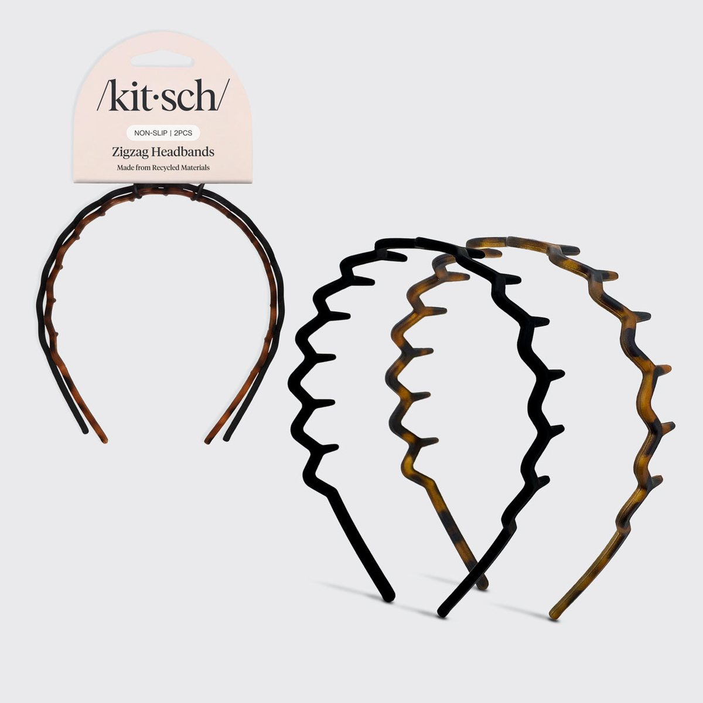
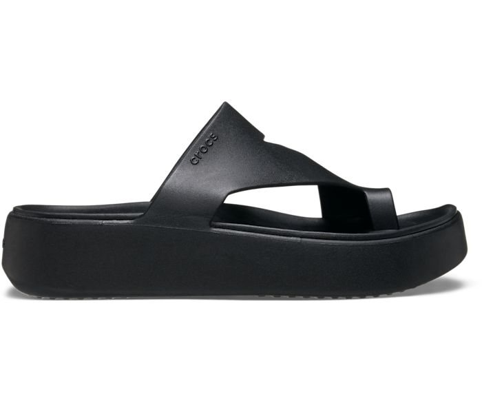
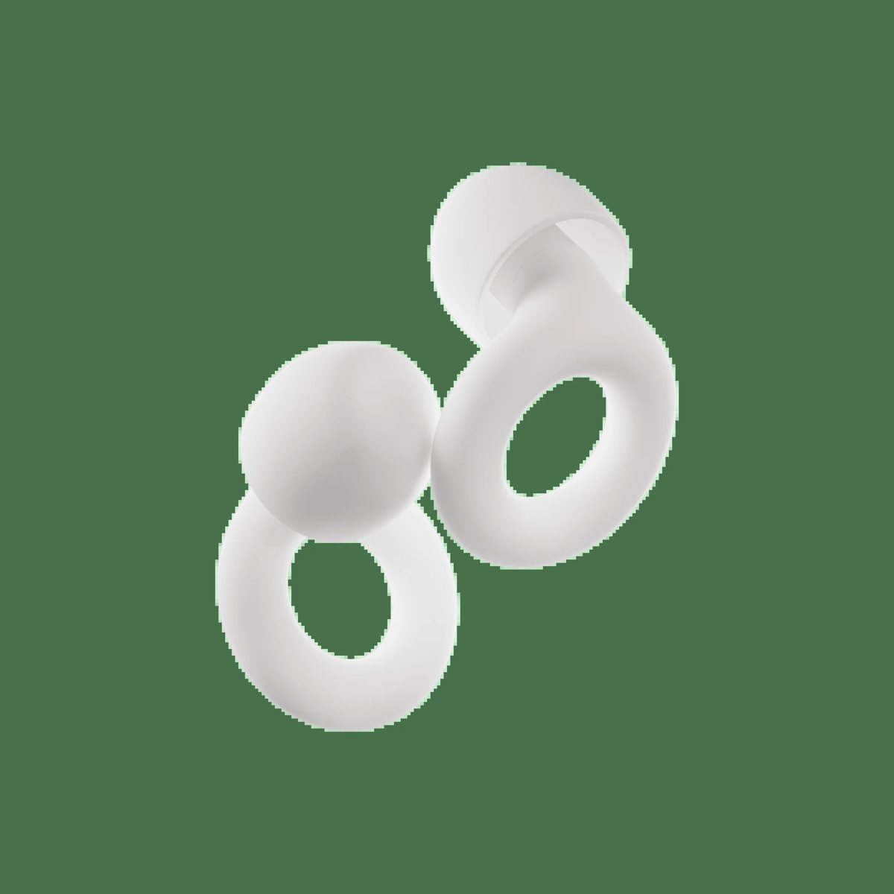
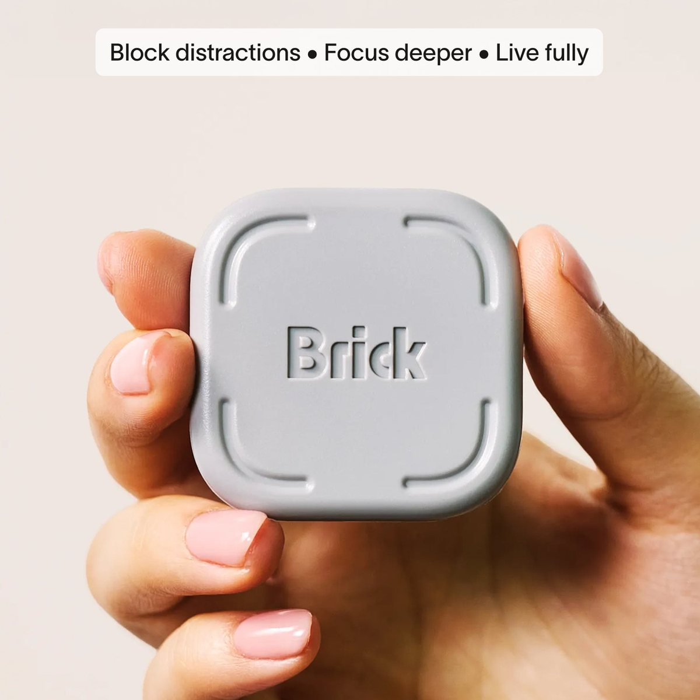
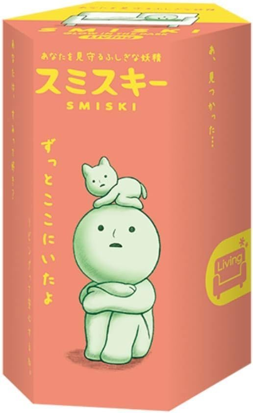
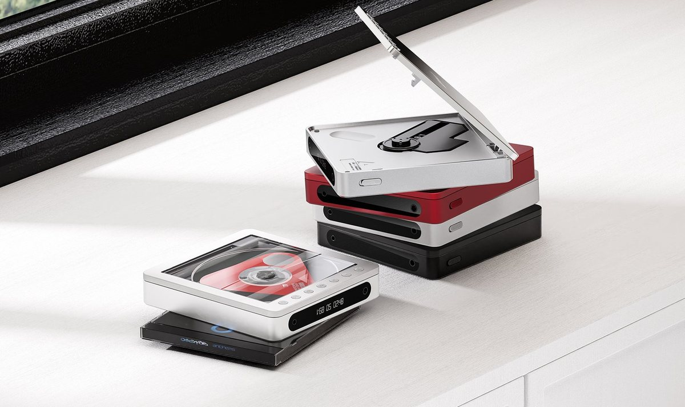

Sony MDR-3R USB-C Wired On-Ear Headphones
Sony revived the 1979 Walkman headphones with a USB-C cable on November 5, 2026. A different edition already sold out, so check the silver listing before you wrap a pair.
Teen gift ideas 2026 from products we already cover. Viral gifts for teens here include headphones, a screen-free camera, headbands, a platform sandal, and a couple of beauty tubes. If our page calls something mainstream, the badge says popular pick.
What to get a teenager this year depends on whether you want something new or something they have already seen in a group chat. The Early badges are the ones our pages do not call mainstream. Popular picks are still giftable. They are just not an early find.
Younger kids have a separate list. A screen-free audio player aimed at children is on the kids guide, not this one.
Sony revived the 1979 Walkman headphones with a USB-C cable on November 5, 2026. A different edition already sold out, so check the silver listing before you wrap a pair.

A point-and-shoot with no screen to scroll. It is already widely known, so this is a popular pick, not an early one, and kids and teens still ask for it.

A two-pack of zig-zag headbands in a shape people are wearing again. Small enough to gift, and our page does not call the pack mainstream.

A platform toe-loop sandal Crocs itself marks as TikTok viral, which is why it fits a teen list. The page still says early-to-mid, and it is not a mainstream label.

A vanilla lip balm in a tube, with an Allure seal already printed on it. A popular pick, not an early find, and an easy beauty gift.

A baked eyeshadow single. Bellini, the rose-gold shade people chased, sold out within hours on October 15, 2026, which is why it belongs on a buy-before-it-vanishes list.

Reusable earplugs for sleep, study, and travel, small enough for a stocking. Widely reviewed already, so this is a popular pick, not an early one.

A small gadget that makes a phone harder to pick up, often given to a teen who wants fewer distractions. It is a popular pick, and it is not a medical device.

A tiny glow figure sold as a blind box. Collectors already know the line, so the badge is a popular pick. The secret figure is scarce by design.

A portable CD player for someone who wants discs again. The page calls it mainstream, so the badge is a popular pick, not an early one.

A 1.25-inch squish cube that already went through a national shortage. It is a popular pick, not an early find, and carts still empty out.
Yes, as popular picks. The badge does not say Early when the product page says mainstream.
No. That player is aimed at children, so it lives on the kids guide and the tech guide.
No. See current price on Amazon from the Where to buy button.
Other ways people search what to get a teenager this year.
Signals are not a promise that a gift will stay in stock or that buying it is a good idea. Read the disclosure before you use a Where to buy link. The link is an Amazon Associates link with tag earlytrends-20.